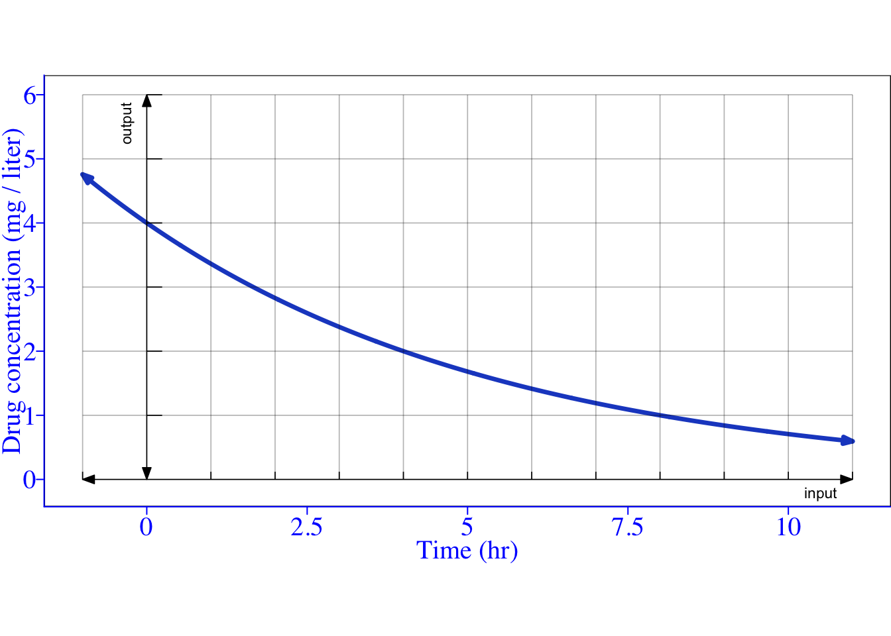
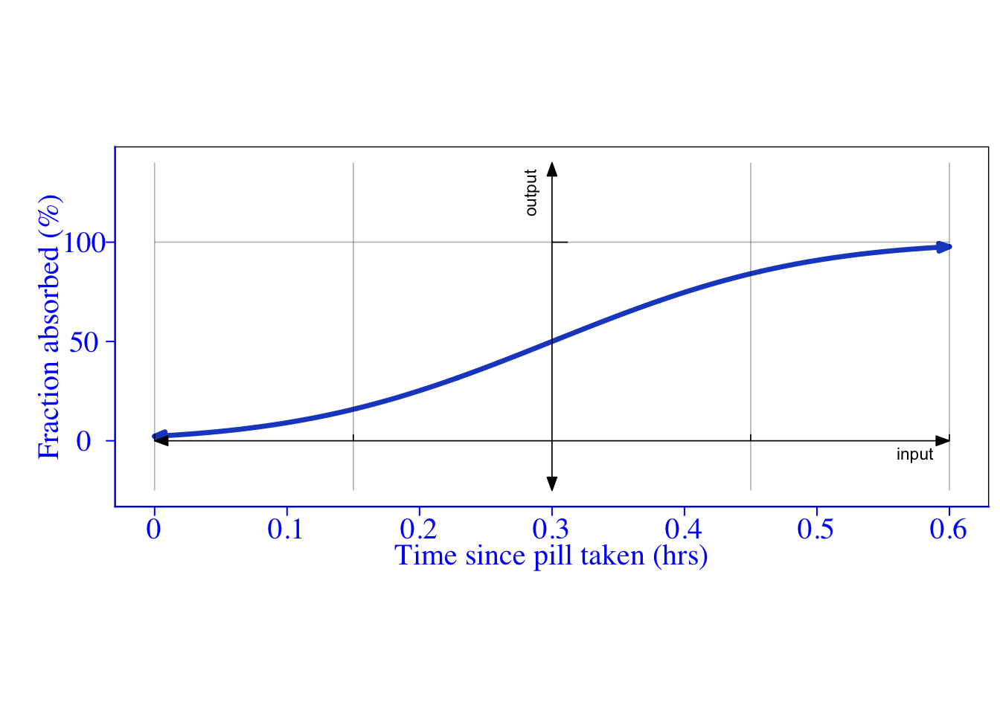
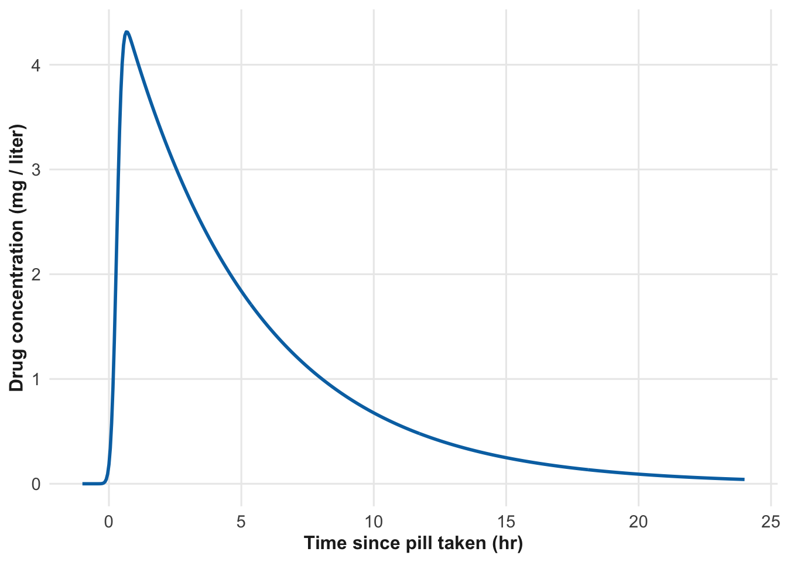
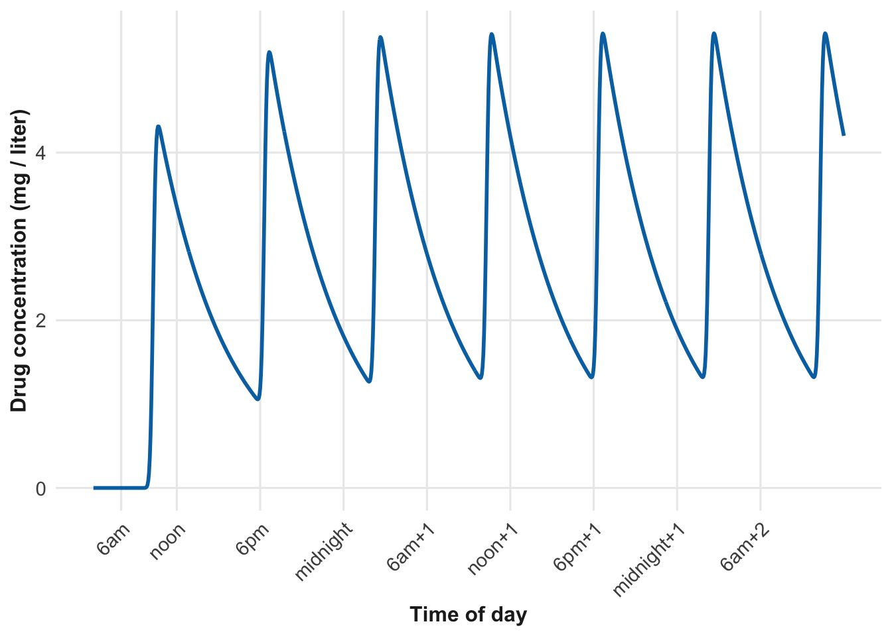
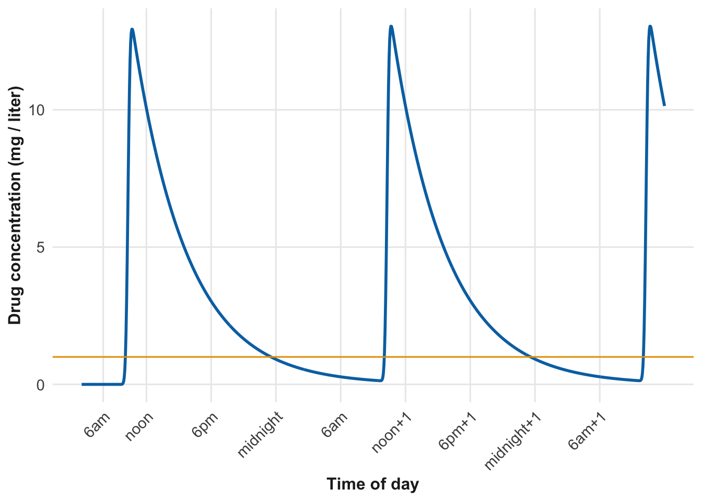
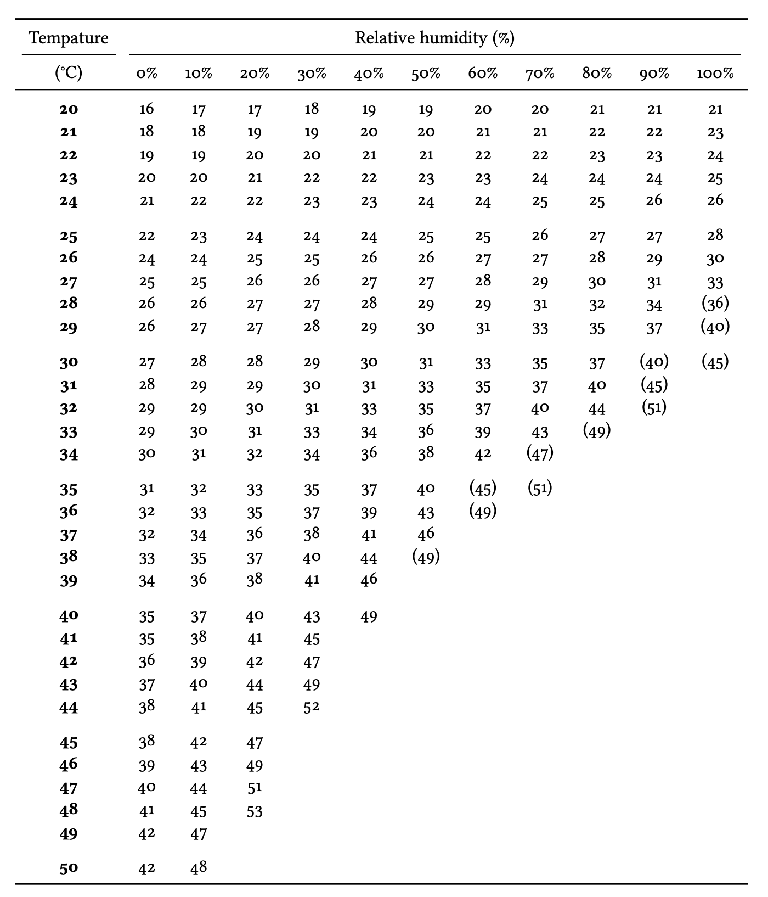
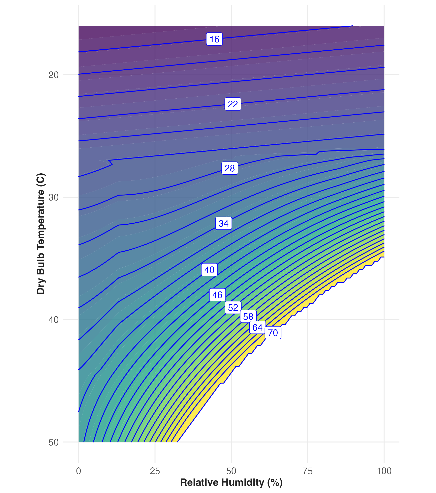

Vocabulary Review
New
This chapter describes tools to build custom functions. The tools help the modeler compose a function that encompasses their ideas and data about a given relationship.
To illustrate, consider this situation: a person develops a sinus infection, ending up having to go to an urgent-care clinic for treatment. An antibiotic is prescribed, the patient picks up the prescription from the pharmacy and begins taking the medication as directed: one small pill every eight hours for seven days.
Wouldn’t it be more convenient to take just one pill a day? Or why not just one pill that covers the entire week? A model can help us understand the implications of different dosing schedules.
To start, we need to know a bit about the physiology of drug absorption and elimination in the human body. The drug in the pill is absorbed through the gut over a short period of time, say, an hour. But even as the drug is being absorbed, the liver metabolizes it and removes it from the blood stream. The removal rate is proportional to the current concentration of the drug in the bloodstream; low concentration means a slow removal rate, while high concentration means a fast removal rate.
There’s no single function among our core modeling functions that captures both absorption and removal of the drug. Still, the exponential function seems a match to drug elimination. As Figure 9.1(a) shows, the exponential function with input and output scaling shows a pattern of high rate of reduction when the drug concentration is high, and low rate of reduction when the concentration is low.


The model of absorption is the hillside function with input scaling so that about half-an-hour after the pill is taken, practically all has been absorbed.
Now we are going to combine the two functions to become a reasonable model of the whole process: absorption and elimination. Drawing on past modeling experience, we’re going to multiply the two functions together, giving the overall function in Figure 9.2.

Recall the SIR model introduced in Section 1.5, where it was described as a book-keeping device for tracking the number of susceptible, infective, and recovered individuals in a population. For each new day, the number of new infectives is a function of the current number of infectives (I) and of susceptibles (S).
Consider how new infectives are produced: a current infective comes into contact with a currently susceptible person. Each such encounter or interaction carries a risk that the susceptible person will become infected. Imagine that the infective encounters several other people each day. Those other people might currently have the illness, or have already recovered from the illness. But some of the contacts will be susceptible. How many? It depends on the fraction of the population who are susceptible. The fraction is S / N, where N is the total population. In terms of our core modeling functions, the fraction of people who are susceptible is same(S) with some output scaling. Likewise, the risk that a susceptible who has been in contact with a current infective is just another layer of output scaling on the same(S) function.
Naturally, each of the I current infectives interacts with other people. The bigger is I, the larger is the number of such encounters. Overall, the number of new infectives is an output scaled version of I \(\times\) S. This from of function often appears in modeling, so often that it has a name: an ☞ interaction term ☜. This is an instance where the name is descriptive of the underlying mechanism that’s being modeled.
Interaction terms appear in many modeling contexts, not just epidemics. For example, in chemistry the speed of a chemical reaction between two reagents, A and B, depends on the product of their concentrations: [A] [B] in the chemists’ notation. But the name used in chemistry is different: the “Law of Mass Action.” But an interaction, is still an interaction, whether it be between two molecules or between an infective and a susceptible, or between a fox and a rabbit.
Although multiplying functions is a valid and powerful way to construct models, it is much more common to encounter models built by adding functions together.
Figure 9.2 depicts the concentration of a drug after taking a single pill. Let’s extend the model to cover situations where multiple pills are taken over time, as with the prescribed “one pill every 8 hours for seven days.”
With input scaling, we can adjust the time at which the pill is taken. Let’s use pill(t) to refer to the function depicted in Figure 9.2. This pill was taken at hour 0. If hour 0 is mid-night, then pill(t - 10) is the function for a pill taken at 10 am. Similarly, pill(t - 18) represents a pill taken at 6 pm. And pill(t - 26) is the next one on the schedule. and so on for the whole seven-day prescription.
The drug from each pill adds to whatever is already in the bloodstream. So the function giving the drug concentration for pills taken at 8-hour intervals (starting at 10 am on day 1) is:
All_pills(t) is an example of a ☞ linear combination of functions ☜. Here, the functions being combined are all input-shifted version of the same pill(t) function, but linear combinations can involve any functions. Figure 9.3 shows all_pills() over the first two-and-a-half days of the prescription.

Figure 9.3 shows how each additional pill raises the drug concentration. Suppose the pharmacist’s goal is to maintain at all times a drug concentration above the therapeutic level of 1 mg/liter, providing no respite to the bacteria causing the infection.
Compare the situation in Figure 9.4 to that of Figure 9.2. A single pill per day regimen would result in the drug concentration falling below 1 mg/liter for most of the day. That’s not acceptable. The most obvious fix comes from recognizing that pill every 8 hours is three pills a day. So to be fair, the comparison the daily pill should have three times the dose of the 8-hour pill. Taking this into account, will the one-pill-per-day regimen work if we tripled the dose of each pill?
This situation also falls under the aegis of the linear combination technique. In linear combinations, the modeler is free to set the output scale the functions being combined. For the one-dose-per-day plan (at triple the dose) the model of drug concentration looks like this:
Let’s graph the function:

The process of exponential decay, which we used in our model of drug concentration, is so familiar throughout science and engineering that it was not surprising to pharmacologists to observe the pattern with drug elimination. The model used in this section uses a drug half-life—the amount of time it takes for the value of the function to fall by half—of about 4.5 hours. Naturally, the half-life can vary from drug to drug. When figuring out what dose should be used in a pill and how often it should be taken, scientists used experiment and statistics to determine the therapeutic dose and the drug half-life.
It turns out that the method of linear combinations is well suited to constructing model functions from data, not just in biomedicine but in all manner of social science and economics contexts.
[
This section introduces a mainstream method for finding good coefficients so that a linear combination of functions approximates data. This is one of the most common quantitative techniques. Unfortunately, the standard name for the technique is bizarre: ☞ linear regression ☜. This strange name is so ubiquitous that it deserves explanation even before we outline the method itself. The usage of “regression” in statistics in the 1890s reflected a misconception that treated a simple mathematical pattern as if it emerged from an underlying natural, biological, or economic process. History can be sticky; our modern understanding is better captured by the name ☞ linear modeling ☜.
The same() and flat() core modeling functions are the most common building blocks for linear regression models, but in principle any function can be included in a linear regression. And, linear regression effectively automates the process of output scaling introduced in Section 7.2.
Let’s use an example to set the stage for understanding linear regression/modeling. Suppose you are studying the factors that contribute to student performance in elementary school. Teachers like to think of themselves as the critical factor, but also point to the benefits of small class sizes and supportive family environments. It’s easy to imagine a system where teacher performance in the classroom is carefully observed and scored by experts, although genuine experts are always in short supply. But, for our example, let’s operationalize teacher skill using such a performance evaluation. Class size is easy to operationalize: count the students in each class and average over each student’s classes.
Supportive family environments? This is harder. We are all inspired by stories of undereducated parents pushing their children to succeed against the odds. Operationalizing this dimension (these dimensions?) requires identifying measurable indicators. Two such are the parents’ level of education and the family’s income. (Perhaps it’s really lack of income that matters, since low-income families often face significant challenges.)
Operationalizing student performance can be controversial, but for this example let’s simply use the score on a standardized test.
We’ve identified four input quantities: teacher performance, parent’s education, family income, and class size. We want to build a function that translates these four inputs into the one output: standardized test score. What should that function look like?
Linear regression involves basing the construction of the function using data. For the example, let’s imagine a data frame where the specimen is an individual student in grade 5 and the columns correspond to the input quantities (performance, education, income, size) and the output (score).
Typically, as in this example, the input quantities have different dimension and are measured in different units. For example, in this example, income is measured in dollars (dimension W), education in years of schooling (dimension T), performance as a score on an evaluation (dimension [1]), and size as the number of students in a class (also dimension [1]). The output quantity, score, also has dimension [1] and its own units.
A linear combination is an ideal format for combining input quantities with different dimensions. It is a generalization of the output scaling introduced in Chapter 7 which we used to convert the pure-number output of the core modeling functions to an output quantity with dimension and units. For our example, the function might be written this way:
The quantity A is a conversion factor that turns performance into a quantity that has the same units and dimension as score. Similarly, B converts years of education into a score and so on for C, D, and E. These conversion factors are called ☞ coefficients ☜.
We can figure out the units and dimension of each of the coefficients using the conversion factor ideas from Chapter 3. For instance, the C coefficient has to turn income (dimension W) into a score (dimension [1]), so its dimension would be [1] / W. Even more, we can say what are the units of C: if income is measured in dollars and score is measured in SAT points, then the units of C would be SAT points per dollar.
Knowing the units and dimensions of the coefficients helps, but it does not directly tell what the numerical value of the quantity should be. This is where the method of linear regression comes in: to find the numerical values of the coefficients that best match the observed data. The calculations themselves are based on theory beyond the scope of this book, but that poses no problem at all since linear regression is implemented in software that anyone can use.
Given that software finds the values of the coefficients, the modeler can focus on two critical tasks:
These two tasks are intimately related . Let’s start with (2).
Each of the coefficients on an input is not just a rate (for instance SAT-points/dollar for C); it is also a rate of change. In other words, the coefficient tells us how much the model output quantity changes when the input quantity changes by one unit. In the example, each of the four coefficients A, B, C, and D is a rate of change that quantifies how the model output will change with a unit change in the corresponding model input. All the terms in the linear combination add together, giving the total change in the model output as a result of changes in all the inputs.
One consequence of this is that each coefficient has meaning only within the context set by the other coefficients. If the modeler were to change the input quantities (for example, leaving out teacher performance), the numerical value of each of the other coefficients would also likely change.
This mathematical fact accounts for many of the disputes one hears about in research results. Different researchers who use different input quantities in their models, even when using the same data for fitting, will get their own coefficients that can seem in conflict with those found by other researchers.
In reporting research results, the phrases ☞ after adjusting for ☜ or ☞ holding constant ☜, or ☞ controlling for ☜ are used to signal which input quantities are used in the model. This is critical information.
One function that we live with every day is the terrain around us: elevation as a function of latitude and longitude. There is a well-accepted graphical format for showing terrain: the topographical map. Figure 9.5 shows an example: the terrain of an island.
The topographical map has many curved lines, called contours. These are easiest to see for the part of the scene that is covered by water. There, the contours are thin blue lines. Each such line traces a path that maintains the same depth.
On land, the contours are brown and are very closely spaced. Here, each contour depicts where the elevation is at a constant elevation above sea level. Many of the contours are labeled. On land, the label gives the elevation; in the sea, the label gives the depth of the water. The map also labels with a number the elevation of a few outstanding points such as the peak of hills or the depth of undersea bowls.
It takes practice to learn how to extract information from topographical maps. Let’s get started by focussing on the terrain around Hansen Bay, just to the left of center on the map. The shoreline is marked as a blue curve. More important for our purposes, that blue curve is a contour line that marks elevation 0, at sea level. You can trace the contour around the island: it never goes inland or out to sea. Moving inland, there are several more contours pretty much parallel to the shoreline and to each other. On this map, each successive contour is at a higher elevation than the one previous; the elevation difference between adjacent contours is 40 feet. Walking inland from Hansen Bay toward Nancy Hill, you cross four light brown contours until you arrive a darker brown one. That darker brown contour indicates an elevation of 200 feet above sea level. (If you trace the dark brown contour around the island, you will find a label on it: 200.) Continuing toward Nancy Hill, you cross another 4 light-brown contours then, having ascended another 200 feet, alight on a dark-brown one circling Nancy Hill. The dark-brown contour marks an elevation of 200 + 200 = 400 feet above sea level. Continuing to climb from the 400 foot contour toward the peak, you cross one, two, and a third contour barely visible under the marker for the peak. We have reached 200 + 200 + 120 = 520 feet when we reach the last, highest contour. The peak is just a little higher: marked as 523 feet on the map.
The contours tell you more about the terrain than the elevation at each point. For example, the steepest route up from any given point is perpendicular to the contour through that point. Steep areas of terrain have closely spaced contours. Conversely, areas with widely spaced contours are relatively flat, as you can see along the shoreline of Hansen Bay. Naturally, the steepness of a path depends on which direction the path goes. Paths perpendicular to contours are steep, paths parallel to contours are flat. With this in mind, look at the road that links Hansen Bay to Princess Creek in the far northwest corner of the map. Roads are generally designed to avoid going steeply uphill, and you can see that the Princess Creek/Hansen Bay road tends to follow the contours, crossing obliquely at shallow angles rather than cutting straight up the steepest slopes.
Or consider the narrow neck connecting the two larger landmasses. This is marked “haul over,” which makes sense because the path connecting the south side of the next to the north side does not cross any contours. That path is relatively flat, a good route to haul a boat overland between the two sides.
The equivalent of a topographical map for functions is called a ☞ contour plot ☜. The output of the function corresponds to the elevation in the map, two inputs play the roles of latitude and longitude respectively. A contour plot provides a mechanism to read off the output for given values of the inputs, but the skilled interpreter can glean more information than that. Figure 9.6 shows an example, the heat-index function introduced in Chapter 6. The inputs are temperature and humidity; the output is the heat index.
Panel (a) of Figure 9.6 is a too-small-to-read reproduction of UNRESOLVED tbl-sultriness. It is used here to show an important spatial pattern in the table, that the heat index is undefined for high temperatures and humidities.
Panel (b) shows the heat index function as a contour plot. By avoiding the table’s visual clutter of a grid of numbers, some simple patterns can be seen. For instance, consider on (b) the heat index output for input temperatures lower than 30°C; the contours run in parallel with a slight upward slope from left to right.
Such parallel contours correspond to the function being a linear combination of the inputs. The slope means that the function increases with both dry-bulb temperature and relative humidity. That the slope is shallow means that—at least in the top portion of the graphical space—the function hardly depends on humidity.
Now consider dry-bulb temperatures higher than 30°C, especially for humidities greater than, say, 50%. The contours are still parallel but they are heavily inclined from left to right and closely spaced together.
The close spacing of the contours indicates, as in the topographical map of Figure 9.5, the function is very steep: a small change in either input produces a large change in the output. This relationship is what’s behind the common summertime complaint: “It’s not the heat, it’s the humidity.”
The inclination of the contours tells us something else: the heat index for high ambient temperatures is closely linked to both humidity and temperature. And the curvature of the contour lines indicates an interaction between temperature and humidity.
The explanation for the big change in pattern from top to bottom on the plot is physiological, not meteorological. Keep in mind that human core body temperature is 37°C. Metabolism generates heat and the core temperature would go up above 37°C if it were not for the body’s cooling mechanisms. When a lot of heat is being generated, as in exercise, one of these cooling mechanisms becomes evident: sweating. Sweating is most effective at low humidities. At high humidities, the evaporation of sweat is less efficient, leading to a rapid increase in perceived heat, which is captured by the steep contours in the heat index plot.


A heat index of 37°C leaves no way for the body to dissipate metabolic heat. Consequently, the core body temperature starts to go up. You can see from the function output that a heat index of 37°C corresponds to dry-bulb temperatures around 42°C, so long as the humidity is low. But as humidity increases, the safety mechanism of sweating shorts out and the skin temperature rises quickly.
A heat index of 65°C or thereabouts is thought to be the limit of human tolerance. After a few hours of exposure at this level the risk of death is very high. At high humidities, this fatal threshold is reached even when the ambient dry-bulb temperature is near normal body temperature.